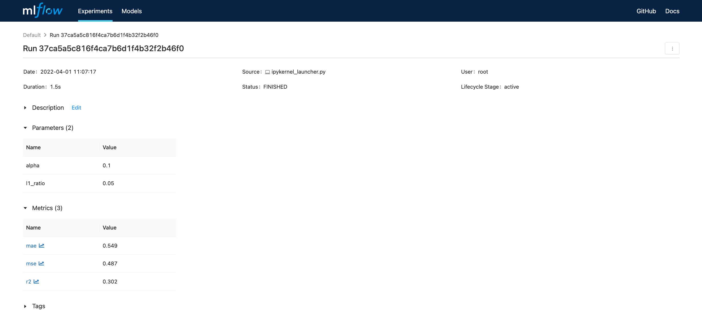
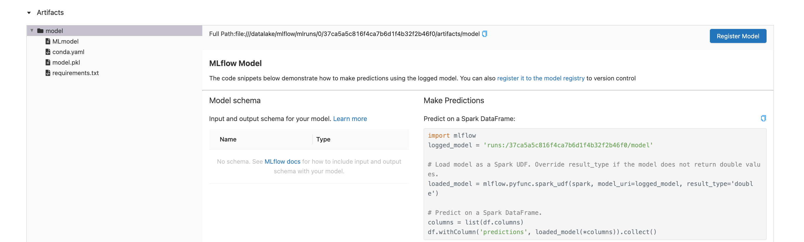
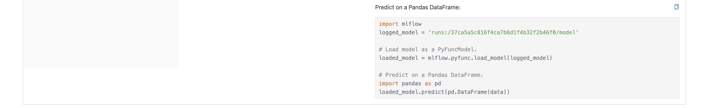

Entrenamiento ingenuo de modelos en sklearn con MLflow— 0:00 min
0:00 min | Ultima modificación: Abril 4, 2022 | YouTube
https://www.mlflow.org/docs/latest/quickstart.html
Carga de datos
[1]:
def load_data():
import pandas as pd
url = "http://archive.ics.uci.edu/ml/machine-learning-databases/wine-quality/winequality-red.csv"
df = pd.read_csv(url, sep=";")
y = df["quality"]
x = df.copy()
x.pop("quality")
return x, y
Particionamiento de los datos
[2]:
def make_train_test_split(x, y):
from sklearn.model_selection import train_test_split
(x_train, x_test, y_train, y_test) = train_test_split(
x,
y,
test_size=0.25,
random_state=123456,
)
return x_train, x_test, y_train, y_test
Métricas de evaluación
[3]:
def eval_metrics(y_true, y_pred):
from sklearn.metrics import mean_absolute_error, mean_squared_error, r2_score
mse = mean_squared_error(y_true, y_pred)
mae = mean_absolute_error(y_true, y_pred)
r2 = r2_score(y_true, y_pred)
return mse, mae, r2
[4]:
def report(estimator, mse, mae, r2):
print(estimator, ":", sep="")
print(f" MSE: {mse}")
print(f" MAE: {mae}")
print(f" R2: {r2}")
Almacenamiento del modelo
[5]:
# -----------------------------------------------------------------------------
# Ya no se requiere con MLflow
# -----------------------------------------------------------------------------
#
# def save_best_estimator(# estimator):
#
# import os
# import pickle
#
# if not os.path.exists("models"):
# os.makedirs("models")
# with open("models/estimator.pickle", "wb") as file:
# pickle.dump(estimator, file)
#
Carga del modelo
[6]:
# -----------------------------------------------------------------------------
# Ya no se requiere con MLflow
# -----------------------------------------------------------------------------
#
# def load_best_estimator():
#
# import os
# import pickle
#
# if not os.path.exists("models"):
# return None
# with open("models/estimator.pickle", "rb") as file:
# estimator = pickle.load(file)
#
# return estimator
#
Entrenamiento
[7]:
def train_estimator(alpha=0.5, l1_ratio=0.5, verbose=1):
import mlflow.sklearn
from sklearn.linear_model import ElasticNet
import mlflow
x, y = load_data()
x_train, x_test, y_train, y_test = make_train_test_split(x, y)
print('Tracking directory:', mlflow.get_tracking_uri())
with mlflow.start_run():
estimator = ElasticNet(alpha=alpha, l1_ratio=l1_ratio, random_state=12345)
estimator.fit(x_train, y_train)
mse, mae, r2 = eval_metrics(y_test, y_pred=estimator.predict(x_test))
if verbose > 0:
report(estimator, mse, mae, r2)
#
# Tracking de parámetros
#
mlflow.log_param("alpha", alpha)
mlflow.log_param("l1_ratio", l1_ratio)
#
# Tracking de metricas
#
mlflow.log_metric("mse", mse)
mlflow.log_metric("mae", mae)
mlflow.log_metric("r2", r2)
#
# Tracking del modelo
#
mlflow.sklearn.log_model(estimator, "model")
# -------------------------------------------------------------------------
# No se requiere
# -------------------------------------------------------------------------
#
# best_estimator = load_best_estimator()
# if best_estimator is None or estimator.score(x_test, y_test) > best_estimator.score(
# x_test, y_test
# ):
# best_estimator = estimator
#
# save_best_estimator(best_estimator)
Búsqueda manual de los mejores hiperparámetros
[8]:
train_estimator(0.5, 0.5)
Tracking directory: file:///datalake/mlflow/mlruns
ElasticNet(alpha=0.5, random_state=12345):
MSE: 0.6349429447805036
MAE: 0.6453803508338732
R2: 0.0890018368226928
[9]:
train_estimator(0.2, 0.2)
Tracking directory: file:///datalake/mlflow/mlruns
ElasticNet(alpha=0.2, l1_ratio=0.2, random_state=12345):
MSE: 0.5170837474931838
MAE: 0.5701436798648394
R2: 0.2581028767270219
[10]:
train_estimator(0.1, 0.1)
Tracking directory: file:///datalake/mlflow/mlruns
ElasticNet(alpha=0.1, l1_ratio=0.1, random_state=12345):
MSE: 0.489021012335199
MAE: 0.551252749110561
R2: 0.29836649473051535
[11]:
train_estimator(0.1, 0.05)
Tracking directory: file:///datalake/mlflow/mlruns
ElasticNet(alpha=0.1, l1_ratio=0.05, random_state=12345):
MSE: 0.48683363717622585
MAE: 0.5493759222336462
R2: 0.30150487868829456
[12]:
train_estimator(0.3, 0.2)
Tracking directory: file:///datalake/mlflow/mlruns
ElasticNet(alpha=0.3, l1_ratio=0.2, random_state=12345):
MSE: 0.5322180010211477
MAE: 0.5793993870194708
R2: 0.23638867818623654
Comparación entre modelos usando MLflow
Para visualizar la interfase use:
mlflow ui
Nota: En docker usar:
mlflow ui --host 0.0.0.0
con:

Hacer doble click en el modelo (Columna ‘Start Time’)
  
Chequeo
[13]:
def check_estimator():
import mlflow
x, y = load_data()
x_train, x_test, y_train, y_test = make_train_test_split(x, y)
# NOTA: este parámetro es copiado directamente de la interfase de MLflow
estimator_path = "runs:/37ca5a5c816f4ca7b6d1f4b32f2b46f0/model"
estimator = mlflow.pyfunc.load_model(estimator_path)
mse, mae, r2 = eval_metrics(y_test, y_pred=estimator.predict(x_test))
report(estimator, mse, mae, r2)
#
# Debe coincidir con el mejor modelo encontrado en la celdas anteriores
#
check_estimator()
---------------------------------------------------------------------------
MlflowException Traceback (most recent call last)
Input In [13], in <cell line: 18>()
12 report(estimator, mse, mae, r2)
15 #
16 # Debe coincidir con el mejor modelo encontrado en la celdas anteriores
17 #
---> 18 check_estimator()
Input In [13], in check_estimator()
8 # NOTA: este parámetro es copiado directamente de la interfase de MLflow
9 estimator_path = "runs:/37ca5a5c816f4ca7b6d1f4b32f2b46f0/model"
---> 10 estimator = mlflow.pyfunc.load_model(estimator_path)
11 mse, mae, r2 = eval_metrics(y_test, y_pred=estimator.predict(x_test))
12 report(estimator, mse, mae, r2)
File /usr/local/lib/python3.9/site-packages/mlflow/pyfunc/__init__.py:691, in load_model(model_uri, suppress_warnings, dst_path)
667 def load_model(model_uri: str, suppress_warnings: bool = True, dst_path: str = None) -> PyFuncModel:
668 """
669 Load a model stored in Python function format.
670
(...)
689 path will be created.
690 """
--> 691 local_path = _download_artifact_from_uri(artifact_uri=model_uri, output_path=dst_path)
693 _warn_dependency_requirement_mismatches(local_path)
695 model_meta = Model.load(os.path.join(local_path, MLMODEL_FILE_NAME))
File /usr/local/lib/python3.9/site-packages/mlflow/tracking/artifact_utils.py:95, in _download_artifact_from_uri(artifact_uri, output_path)
92 parsed_uri = parsed_uri._replace(path=posixpath.dirname(parsed_uri.path))
93 root_uri = prefix + urllib.parse.urlunparse(parsed_uri)
---> 95 return get_artifact_repository(artifact_uri=root_uri).download_artifacts(
96 artifact_path=artifact_path, dst_path=output_path
97 )
File /usr/local/lib/python3.9/site-packages/mlflow/store/artifact/artifact_repository_registry.py:107, in get_artifact_repository(artifact_uri)
97 def get_artifact_repository(artifact_uri):
98 """Get an artifact repository from the registry based on the scheme of artifact_uri
99
100 :param artifact_uri: The artifact store URI. This URI is used to select which artifact
(...)
105 requirements.
106 """
--> 107 return _artifact_repository_registry.get_artifact_repository(artifact_uri)
File /usr/local/lib/python3.9/site-packages/mlflow/store/artifact/artifact_repository_registry.py:73, in ArtifactRepositoryRegistry.get_artifact_repository(self, artifact_uri)
66 if repository is None:
67 raise MlflowException(
68 "Could not find a registered artifact repository for: {}. "
69 "Currently registered schemes are: {}".format(
70 artifact_uri, list(self._registry.keys())
71 )
72 )
---> 73 return repository(artifact_uri)
File /usr/local/lib/python3.9/site-packages/mlflow/store/artifact/runs_artifact_repo.py:26, in RunsArtifactRepository.__init__(self, artifact_uri)
23 from mlflow.store.artifact.artifact_repository_registry import get_artifact_repository
25 super().__init__(artifact_uri)
---> 26 uri = RunsArtifactRepository.get_underlying_uri(artifact_uri)
27 self.repo = get_artifact_repository(uri)
File /usr/local/lib/python3.9/site-packages/mlflow/store/artifact/runs_artifact_repo.py:39, in RunsArtifactRepository.get_underlying_uri(runs_uri)
37 (run_id, artifact_path) = RunsArtifactRepository.parse_runs_uri(runs_uri)
38 tracking_uri = get_databricks_profile_uri_from_artifact_uri(runs_uri)
---> 39 uri = get_artifact_uri(run_id, artifact_path, tracking_uri)
40 assert not RunsArtifactRepository.is_runs_uri(uri) # avoid an infinite loop
41 return add_databricks_profile_info_to_artifact_uri(uri, tracking_uri)
File /usr/local/lib/python3.9/site-packages/mlflow/tracking/artifact_utils.py:47, in get_artifact_uri(run_id, artifact_path, tracking_uri)
41 raise MlflowException(
42 message="A run_id must be specified in order to obtain an artifact uri!",
43 error_code=INVALID_PARAMETER_VALUE,
44 )
46 store = _get_store(tracking_uri)
---> 47 run = store.get_run(run_id)
48 # Maybe move this method to RunsArtifactRepository so the circular dependency is clearer.
49 assert urllib.parse.urlparse(run.info.artifact_uri).scheme != "runs" # avoid an infinite loop
File /usr/local/lib/python3.9/site-packages/mlflow/store/tracking/file_store.py:532, in FileStore.get_run(self, run_id)
528 """
529 Note: Will get both active and deleted runs.
530 """
531 _validate_run_id(run_id)
--> 532 run_info = self._get_run_info(run_id)
533 if run_info is None:
534 raise MlflowException(
535 "Run '%s' metadata is in invalid state." % run_id, databricks_pb2.INVALID_STATE
536 )
File /usr/local/lib/python3.9/site-packages/mlflow/store/tracking/file_store.py:551, in FileStore._get_run_info(self, run_uuid)
549 exp_id, run_dir = self._find_run_root(run_uuid)
550 if run_dir is None:
--> 551 raise MlflowException(
552 "Run '%s' not found" % run_uuid, databricks_pb2.RESOURCE_DOES_NOT_EXIST
553 )
554 run_info = self._get_run_info_from_dir(run_dir)
555 if run_info.experiment_id != exp_id:
MlflowException: Run '37ca5a5c816f4ca7b6d1f4b32f2b46f0' not found
[ ]:
%%bash
rm -rf outputs mlruns models